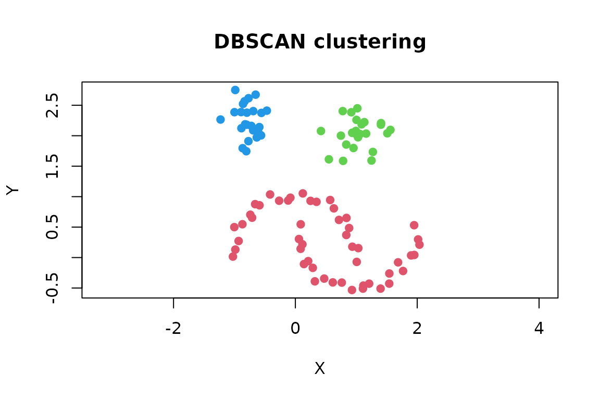
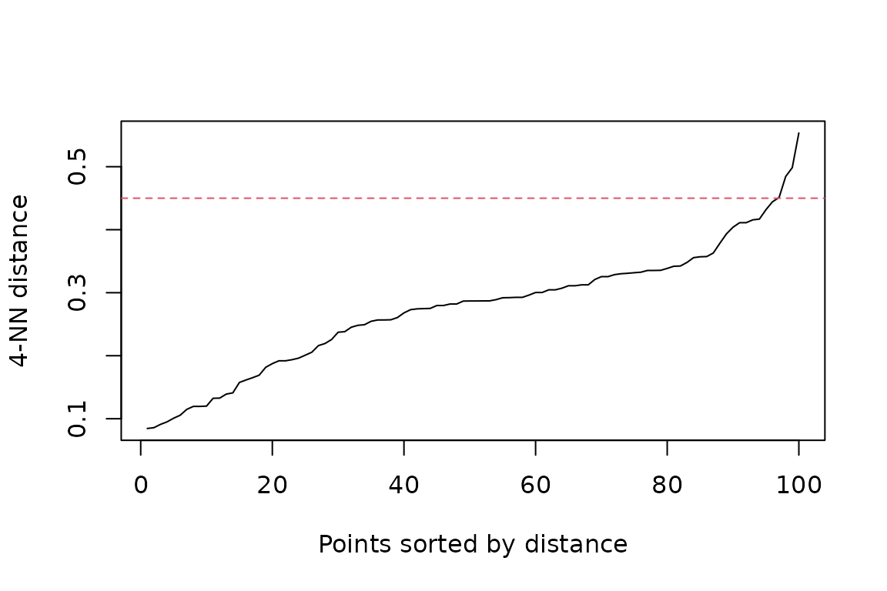
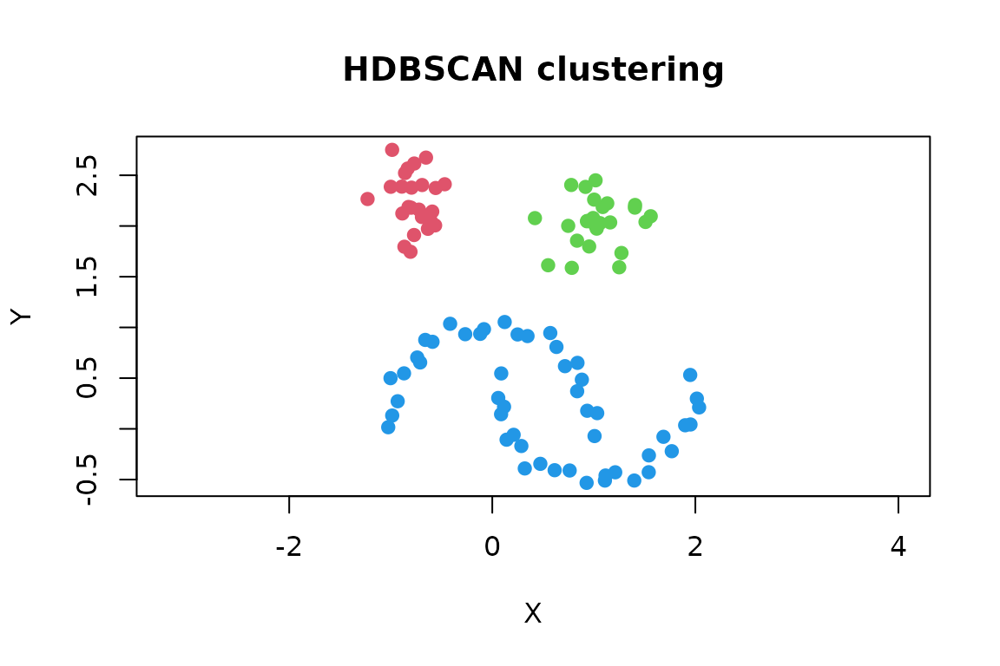

The dbscan package provides fast implementations of density-based clustering algorithms. These algorithms can find clusters with irregular shapes and identify observations in sparse regions as noise. This vignette introduces the usual workflow with DBSCAN and briefly shows when HDBSCAN or OPTICS may be a better choice.
Installation
Install the released version from CRAN:
install.packages("dbscan")Load the package in each R session where you want to use it:
A first clustering
We use the two-dimensional moons data included in the
package. Each row is an observation and each column is a numeric
feature.
DBSCAN needs two parameters:
-
epsis the radius of a point’s neighborhood. -
minPtsis the minimum number of points, including the point itself, needed to form a dense region.
cl <- dbscan(x, eps = 0.45, minPts = 5)
cl
#> DBSCAN clustering for 100 objects.
#> Parameters: eps = 0.45, minPts = 5
#> Using euclidean distances and borderpoints = TRUE
#> The clustering contains 3 cluster(s) and 0 noise points.
#>
#> 1 2 3
#> 50 25 25
#>
#> Available fields: cluster, eps, minPts, metric, borderPointsThe cluster assignment for each observation is stored in
cl$cluster. Positive integers are cluster labels and
0 denotes noise. Cluster numbers are identifiers only;
their numeric order has no meaning.
The labels can be added to the original data or used directly for plotting.
clustered <- transform(moons, cluster = factor(cl$cluster))
head(clustered)
#> X Y cluster
#> 1 -0.41520756 1.0357347 1
#> 2 0.05878098 0.3043343 1
#> 3 1.10937860 -0.5097378 1
#> 4 1.54094828 -0.4275496 1
#> 5 0.92909498 -0.5323878 1
#> 6 -0.86932470 0.5471548 1
plot(
x,
col = cl$cluster + 1L,
pch = ifelse(cl$cluster == 0, 4, 19),
asp = 1,
xlab = "X",
ylab = "Y",
main = "DBSCAN clustering"
)
With the default R palette, noise is black because its cluster label is zero.
Prepare your own data
For the fast default search, supply a numeric matrix or data frame without missing or infinite values. DBSCAN uses Euclidean distance, so the scale of the variables matters. A variable measured in large units can otherwise dominate the distance calculation. Standardizing is often appropriate when features use different units:
x <- scale(my_data)Whether scaling is appropriate depends on the meaning of the
variables. Do not include identifiers, labels, or unordered factors as
numeric features. For a non-Euclidean distance, calculate a
dist object first and pass it to dbscan();
this does not use the fast kd-tree search.
Choose minPts and eps
There is no single best parameter setting for every data set. A useful starting point is:
- Choose
minPtsbased on the smallest dense group that should count as a cluster. For low-dimensional data, the number of dimensions plus one is a common lower bound; larger values produce smoother, more conservative results. - Inspect the sorted distance to each point’s
minPts - 1nearest neighbor. - Choose
epsnear a visible bend where the distances begin to increase rapidly.
kNNdistplot() performs the second step. Supplying
minPts automatically uses k = minPts - 1
because a DBSCAN neighborhood also counts the point itself.
kNNdistplot(x, minPts = 5)
abline(h = 0.45, col = 2, lty = 2)
The bend is a guide rather than an automatic rule. Refit the model with a few nearby values and check whether the important structure is stable:
settings <- c(0.40, 0.45, 0.50)
fits <- lapply(
settings,
function(e) dbscan(x, eps = e, minPts = 5)
)
data.frame(
eps = settings,
clusters = vapply(fits, function(fit) max(fit$cluster), integer(1)),
noise = vapply(fits, function(fit) sum(fit$cluster == 0), integer(1))
)
#> eps clusters noise
#> 1 0.40 4 0
#> 2 0.45 3 0
#> 3 0.50 3 0Increasing eps tends to merge clusters and label fewer
points as noise. Increasing minPts makes the density
requirement stricter. Domain knowledge and the intended use of the
clusters should guide the final choice.
Assign new observations
Although DBSCAN does not learn a conventional prediction model, the
package can assign a new observation to the cluster of its nearest
non-noise training point within eps. If no such point
exists, it is assigned to noise.
new_points <- rbind(
c(0.0, 0.0),
c(1.0, 2.0),
c(4.0, 4.0)
)
predict(cl, newdata = new_points, data = x)
#> [1] 1 2 0When training data were transformed, apply the same transformation to
new observations before prediction. Also keep the original training
matrix: it is required by predict().
When DBSCAN is not the best starting point
The package contains several related algorithms:
| Algorithm | Useful when |
|---|---|
dbscan() |
Clusters have roughly similar density and one meaningful neighborhood radius can be chosen. |
hdbscan() |
Clusters may have different densities or you want to
avoid choosing a global eps. |
optics() |
You want to explore clustering structure over a range of neighborhood radii. |
HDBSCAN requires only minPts for a basic analysis and
extracts stable clusters from a density hierarchy:
hdb <- hdbscan(x, minPts = 5)
hdb
#> HDBSCAN clustering for 100 objects.
#> Parameters: minPts = 5
#> The clustering contains 3 cluster(s) and 0 noise points.
#>
#> 1 2 3
#> 25 25 50
#>
#> Available fields: cluster, minPts, coredist, cluster_scores,
#> membership_prob, outlier_scores, hc
plot(
x,
col = hdb$cluster + 1L,
pch = ifelse(hdb$cluster == 0, 4, 19),
asp = 1,
main = "HDBSCAN clustering"
)
The HDBSCAN result also contains membership strengths, outlier
scores, and a cluster hierarchy. See
vignette("hdbscan", package = "dbscan") for a more detailed
introduction.
OPTICS creates an ordering whose reachability plot exposes clustering structure. Valleys in the plot correspond to dense groups. A DBSCAN-like clustering can then be extracted at different thresholds without rerunning OPTICS.
opt_cl <- extractDBSCAN(opt, eps_cl = 0.45)
table(opt_cl$cluster)
#>
#> 1 2 3
#> 50 25 25Next steps
Useful help pages include:
-
?dbscanfor DBSCAN options, core-point detection, and more examples; -
?hdbscanand?opticsfor hierarchical and multi-scale clustering; -
?kNNand?frNNfor fast nearest-neighbor search; -
?lofand?gloshfor outlier scoring; and -
?dbcvfor density-based cluster validation.
For a citable description of the algorithms and implementation, use
citation("dbscan").